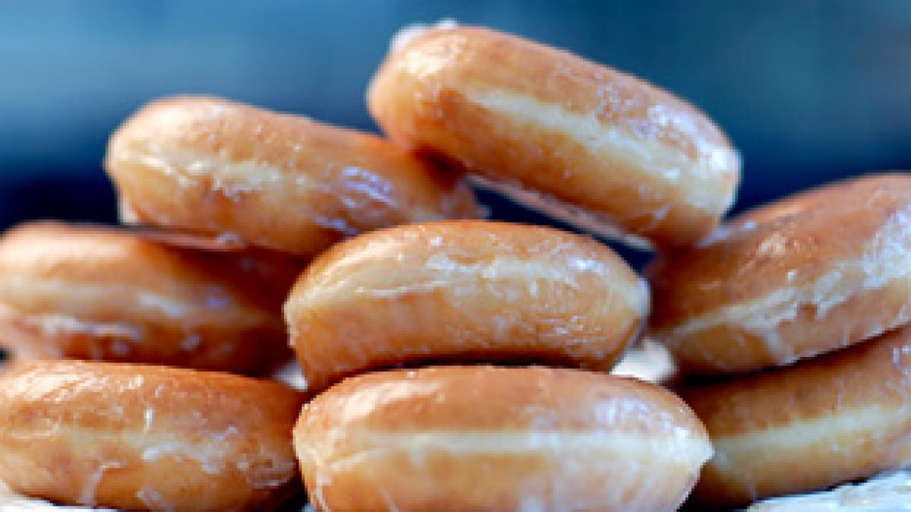

Spongy Donut Recipe

Description
Very chewy donuts baked with love and care. They can be topped with chocolate, vanilla, sugar, or any topping you desire. In this recipe, we will be making plain donuts, and mentioning any toppings we add at the end.
Ingredients
A list of ingredients required for this recipe:
- 3 cups of flour
- 1/4 cup of sugar
- 1/4 cup of milk
- 1 egg
- 3 tbsp of yeast
- 1 tsp of baking powder
- 1 tsp of warm water
- 1 pinch of salt
- 2 tbsp of butter
- 2 tbsp of oil
Steps
- Mix all ingredients, excluding yeast, salt and warm water and butter, oil and milk, in a bowl. Call it bowl 1.
- In another bowl, add in the yeast, salt and warm water. Stir and set aside for 5 minutes to activate yeast. Call it bowl 2.
- Break the egg into bowl 1.
- Add the butter, oil and milk in bowl 1.
- Add the contents of bowl 2 into bowl 1.
- Knead well to make a dough.
- Cover the dough with a clean towel or nylon to allow to double in size.
- Knead the dough for 5 minutes. Use a rolling pin to flatten the dough and remove the donut shapes.
- Place the shapes on a flat surface and allow to rise again for 10 minutes.
- Fry on low heat till golden brown.
Return to homepage...